with less_random():
_,axs = plt.subplots(1,2,figsize=(8,4))
f = Flip()
for ax in axs: f(audio, split_idx=0).show(ctx=ax, hear=False)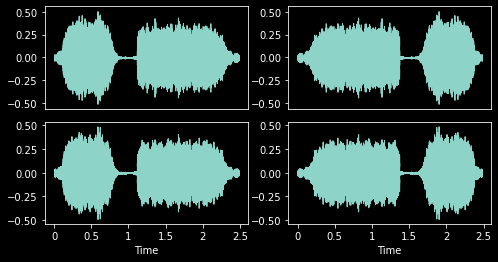
Item transforms which run on the CPU.
Flip (p:float=0.5)
Randomly flip TensorAudio with probability p
with less_random():
_,axs = plt.subplots(1,2,figsize=(8,4))
f = Flip()
for ax in axs: f(audio, split_idx=0).show(ctx=ax, hear=False)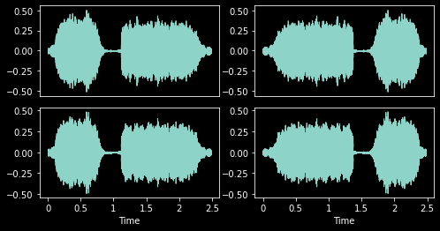
Roll (p:float=0.5, max_roll:float=0.5)
Randomly shift TensorAudio with rollover
| Type | Default | Details | |
|---|---|---|---|
| p | float | 0.5 | Per-item probability |
| max_roll | float | 0.5 | Maximum shift |
with less_random():
_,axs = plt.subplots(1,3,figsize=(12,4))
f = Roll(p=1,max_roll=0.5)
for ax in axs: f(audio, split_idx=0).show(ctx=ax, hear=False)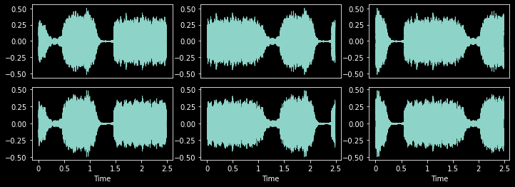
AudioPadMode (value, names=None, module=None, qualname=None, type=None, start=1)
An enumeration.
RandomCropPad (duration:Numeric|None=None, samples:int|None=None, padmode:AudioPadMode=<AudioPadMode.Repeat: 4>, constant:Numeric=0)
Randomly resize TensorAudio to specified length. Center crop during valid.
| Type | Default | Details | |
|---|---|---|---|
| duration | Numeric | None | None | Crop length in seconds |
| samples | int | None | None | Crop length in samples |
| padmode | AudioPadMode | AudioPadMode.Repeat | How to pad if necessary |
| constant | Numeric | 0 | Value for AudioPadMode.Constant |
RandomCropPad will pad using one of the following five modes if the input length is less than duration or samples.
with less_random():
_,axs = plt.subplots(1,4,figsize=(18,4))
for ax,padmode in zip(axs.flatten(), [AudioPadMode.Constant, AudioPadMode.ConstantPre,
AudioPadMode.ConstantPost, AudioPadMode.Repeat]
):
rcp = RandomCropPad(4, padmode=padmode)
rcp(audio, split_idx=1).show(ctx=ax, title=padmode, hear=False)
plt.tight_layout()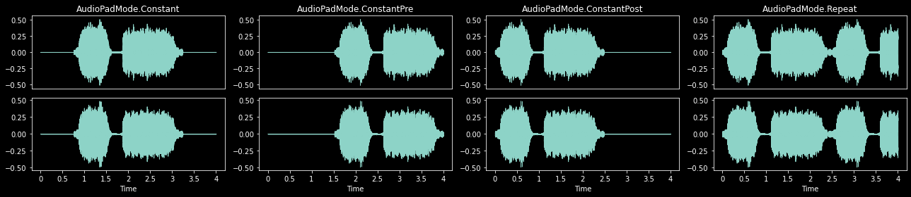
During training, RandomCropPad will randomly crop if the input length is greater than duration or samples.
with less_random():
_,axs = plt.subplots(1,3,figsize=(12,4))
rcp = RandomCropPad(1.2)
for ax in axs: rcp(audio, split_idx=0).show(ctx=ax, hear=False)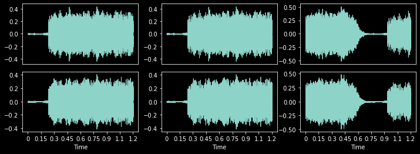
During validation or prediction, RandomCropPad will center crop if the input length is greater than duration or samples.
with less_random():
_,axs = plt.subplots(1,3,figsize=(12,4))
rcp = RandomCropPad(1.2)
for ax in axs: rcp(audio, split_idx=1).show(ctx=ax, hear=False)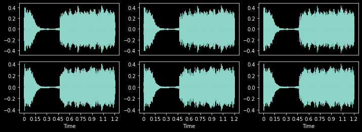
VolumeMode (value, names=None, module=None, qualname=None, type=None, start=1)
An enumeration.
Volume (p:float=0.75, gain:Numeric|None=None, gain_range:tuple[Numeric,Numeric]=(-18, 6), volmode:VolumeMode=<VolumeMode.DB: 1>)
Randomly change TensorAudio’s volume
| Type | Default | Details | |
|---|---|---|---|
| p | float | 0.75 | Per-item probability |
| gain | Numeric | None | None | Gain is a positive amplitude ratio, a power (voltage squared), or in decibels. If none, randomly select from gain_range. |
| gain_range | tuple[Numeric, Numeric] | (-18, 6) | Random range for gain |
| volmode | VolumeMode | VolumeMode.DB | One of VolumeMode.DB, VolumeMode.Amplitude, or VolumeMode.Power |
_,axs = plt.subplots(1,4,figsize=(18,4))
for ax,gain in zip(axs.flatten(), [-18, -6, 0, 6]):
vol = Volume(p=1., gain=gain)
vol(audio, split_idx=0).show(ctx=ax, title=f'{gain} DB', hear=False)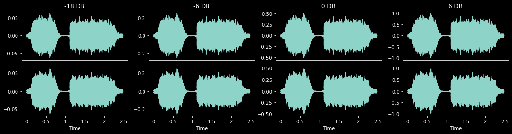
PeakNorm (p:float=0.1)
Randomly apply constant gain so TensorAudio’s loudest level is between -1 and 1 with probability p
_,axs = plt.subplots(1,1,figsize=(4,4))
PeakNorm(p=1.)(audio, split_idx=0).show(ctx=axs, hear=False)<AxesSubplot:>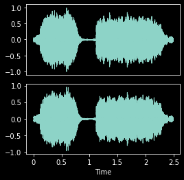
VolumeOrPeakNorm (p:float=0.75, peak_p:float=0.1, gain:Numeric|None=None, gain_range:tuple[Numeric,Numeric]=(-18, 6), volmode:VolumeMode=<VolumeMode.DB: 1>)
Randomly apply Volume or Peak to TensorAudio in one transform
| Type | Default | Details | |
|---|---|---|---|
| p | float | 0.75 | Per-item probability |
| peak_p | float | 0.1 | Probability of applying Peak |
| gain | Numeric | None | None | Gain is a positive amplitude ratio, a power (voltage squared), or in decibels. If none, randomly select from gain_range. |
| gain_range | tuple[Numeric, Numeric] | (-18, 6) | Random range for gain |
| volmode | VolumeMode | VolumeMode.DB | One of VolumeMode.DB, VolumeMode.Amplitude, or VolumeMode.Power |
Noise (p=0.25, noise_level:float|None=None, noise_range:tuple[float,float]=(0.01, 0.1), color:NoiseColor|None=None)
Adds noise of specified color and level to TensorAudio relative to mean audio level
| Type | Default | Details | |
|---|---|---|---|
| p | float | 0.25 | Per-item probability |
| noise_level | float | None | None | Loudness of noise, if None randomly selects from noise_range |
| noise_range | tuple[float, float] | (0.01, 0.1) | Range of noise loudness values |
| color | NoiseColor | None | None | Color of noise to add, if None randomly selects from NoiseColor |
with less_random():
cn = NoiseColor.White
_,axs = plt.subplots(1,4,figsize=(22,4))
plt.suptitle(f'{cn}')
for ax,nl in zip(axs.flatten(), [0.02, 0.05, 0.1, 0.2]):
ps = Noise(p=1., noise_level=nl, color=cn)
audio = TensorAudio.create(TEST_AUDIO)
ps(audio, split_idx=0).show(ctx=ax, title=f'noise_level: {nl}', hear=False)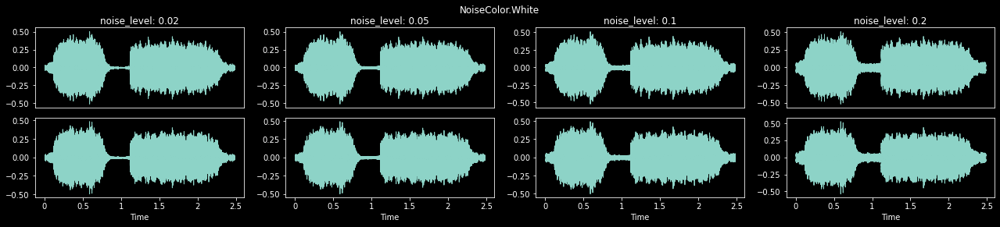
Batch transforms which run on the GPU.
VolumeBatch (p:float=0.5, gain:Numeric|None=None, gain_range:tuple[Numeric,Numeric]=(-18, 6), volmode:VolumeMode=<VolumeMode.DB: 1>)
Randomly change TensorAudio’s volume on the GPU
| Type | Default | Details | |
|---|---|---|---|
| p | float | 0.5 | Per-item probability |
| gain | Numeric | None | None | Gain is a positive amplitude ratio, a power (voltage squared), or in decibels. If none, randomly select from gain_range. |
| gain_range | tuple[Numeric, Numeric] | (-18, 6) | Random range for gain |
| volmode | VolumeMode | VolumeMode.DB | One of VolumeMode.DB, VolumeMode.Amplitude, or VolumeMode.Power |
PitchShift (p:float=0.2, semitones:tuple[float,float]=(-4.0, 4.0), bins_per_octave:int=12, padmode:AudioPadMode=<AudioPadMode.Repeat: 4>, constant:Numeric=0, split:int|None=None)
Fast shift of TensorAudio’s pitch.
| Type | Default | Details | |
|---|---|---|---|
| p | float | 0.2 | Per-item probability |
| semitones | tuple[float, float] | (-4.0, 4.0) | Random pitch shift range in semitones to compute efficient shifts |
| bins_per_octave | int | 12 | Number of steps per octave |
| padmode | AudioPadMode | AudioPadMode.Repeat | How to pad if necessary |
| constant | Numeric | 0 | Value for AudioPadMode.Constant |
| split | int | None | None | Apply transform to split items at a time. Use to prevent GPU OOM. |
with less_random():
_,axs = plt.subplots(1,4,figsize=(22,4))
ps = PitchShift(p=1.)
for ax in axs.flatten():
audio = TensorAudio.create(TEST_AUDIO)
ps(audio.unsqueeze(0), split_idx=0).squeeze(0).show(ctx=ax, title=f'shift: {ps.shift}', hear=False)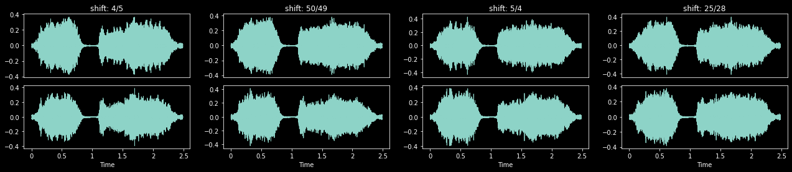
PitchShiftTA (p:float=0.2, n_steps:int|None=None, n_step_range:tuple[int,int]=(2, 6), bins_per_octave:int=12, n_fft:int=512, win_length:int|None=None, hop_length:int|None=None, window_fn:Callable[...,Tensor]=<built-in method hann_window of type object at 0x7f95e7c335c0>, wkwargs:dict|None=None)
Shift the TensorAudio’s pitch using TorchAudio. Can be slower than PitchShift
| Type | Default | Details | |
|---|---|---|---|
| p | float | 0.2 | Per-item probability |
| n_steps | int | None | None | The (fractional) steps to shift waveform |
| n_step_range | tuple[int, int] | (2, 6) | Random n_steps range if n_steps is None |
| bins_per_octave | int | 12 | Number of steps per octave |
| n_fft | int | 512 | Size of FFT, creates n_fft // 2 + 1 bins |
| win_length | int | None | None | Window size. Defaults to n_fft |
| hop_length | int | None | None | Length of hop between STFT windows. Defaults to win_length // 4 |
| window_fn | Callable[…, Tensor] | hann_window | Window tensor applied/multiplied to each frame/window |
| wkwargs | dict | None | None | Args for window_fn |
_,axs = plt.subplots(1,4,figsize=(22,4))
for ax,steps in zip(axs.flatten(), [2, 3, 5, 7]):
ps = PitchShiftTA(p=1., n_steps=steps)
audio = TensorAudio.create(TEST_AUDIO)
ps(audio.unsqueeze(0), split_idx=0).squeeze(0).show(ctx=ax, title=f'n_steps: {steps}', hear=False)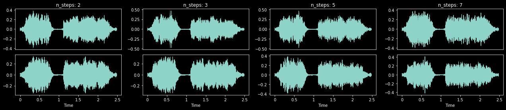
TimeStretch (p:float=0.2, stretch_rates:tuple[float,float]=(0.5, 2.0), padmode:AudioPadMode=<AudioPadMode.Repeat: 4>, constant:Numeric=0, split:int|None=None)
Fast time stretch of TensorAudio
| Type | Default | Details | |
|---|---|---|---|
| p | float | 0.2 | Per-item probability |
| stretch_rates | tuple[float, float] | (0.5, 2.0) | Random time stretch range to compute efficient stretches. Defaults to 50%-200% speed |
| padmode | AudioPadMode | AudioPadMode.Repeat | How to pad if necessary |
| constant | Numeric | 0 | Value for AudioPadMode.Constant |
| split | int | None | None | Apply transform to split items at a time. Use to prevent GPU OOM. |
with less_random():
_,axs = plt.subplots(1,4,figsize=(22,4))
ts = TimeStretch(p=1.)
for ax in axs.flatten():
audio = TensorAudio.create(TEST_AUDIO)
ts(audio.unsqueeze(0), split_idx=0).squeeze(0).show(ctx=ax, title=f'stretch: {ts.stretch}', hear=False)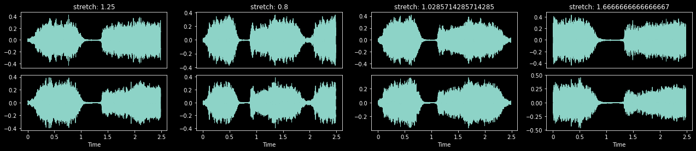
PitchShiftOrTimeStretch (p:float=0.4, semitones:tuple[float,float]=(-4.0, 4.0), bins_per_octave:int=12, stretch_rates:tuple[float,float]=(0.5, 2.0), padmode:AudioPadMode=<AudioPadMode.Repeat: 4>, constant:Numeric=0, split:int|None=None)
Randomly apply either PitchShift or TimeStretch to TensorAudio to minimize distortion
| Type | Default | Details | |
|---|---|---|---|
| p | float | 0.4 | Per-item probability |
| semitones | tuple[float, float] | (-4.0, 4.0) | Random pitch shift range in semitones to compute efficient shifts |
| bins_per_octave | int | 12 | Number of steps per octave |
| stretch_rates | tuple[float, float] | (0.5, 2.0) | Random time stretch range to compute efficient stretches. Defaults to 50%-200% speed |
| padmode | AudioPadMode | AudioPadMode.Repeat | How to pad if necessary |
| constant | Numeric | 0 | Value for AudioPadMode.Constant |
| split | int | None | None | Apply transform to split items at a time. Use to prevent OOM. |
with less_random(2998):
_,axs = plt.subplots(1,4,figsize=(22,4))
psts = PitchShiftOrTimeStretch(p=1.)
for ax in axs.flatten():
audio = TensorAudio.create(TEST_AUDIO)
psts(audio.unsqueeze(0), split_idx=0).squeeze(0).show(ctx=ax, title='stretch' if sum(psts.stretch_idxs) else 'pitch', hear=False)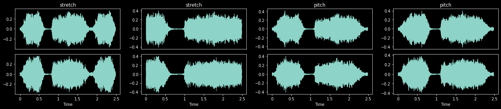
Batch transforms which run on the GPU.
# audio = TensorAudio.create(TEST_AUDIO)
mel = MelSpectrogram(audio.sr, hop_length=1024, n_fft=1024, n_mels=112)(audio)
mel.show(to_db=True)<AxesSubplot:>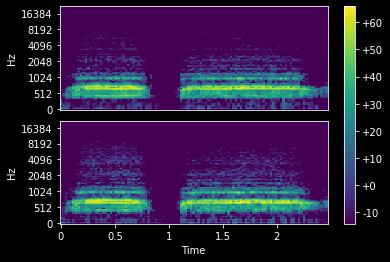
TimeMasking (p:float=0.25, max_mask:float=0.2, iid_masks:bool=True, mask_value:int|None=0)
Randomly apply masking to a TensorSpec or TensorMelSpec in the time domain
| Type | Default | Details | |
|---|---|---|---|
| p | float | 0.25 | Per-item probability |
| max_mask | float | 0.2 | Maximum possible length of the mask [0, max_mask) |
| iid_masks | bool | True | Apply different masks to each example/channel in the batch |
| mask_value | int | None | 0 | If None, random value between batch min and max |
with less_random():
_,axs = plt.subplots(1,3,figsize=(12,4))
tm = TimeMasking(p=1., max_mask=0.5)
for ax in axs:
mel = MelSpectrogram(audio.sr, hop_length=1024, n_fft=1024, n_mels=112)(audio)
tm(mel.unsqueeze(0), split_idx=0).squeeze(0).show(ctx=ax, to_db=True)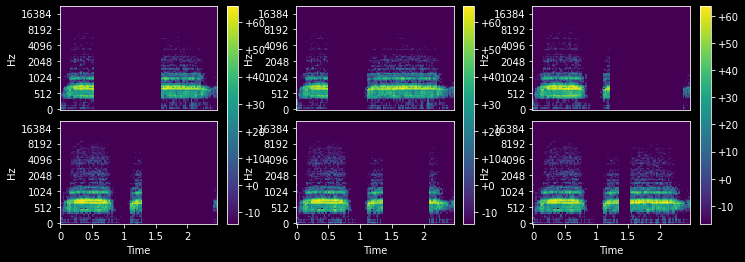
FrequencyMasking (p:float=0.25, max_mask:float=0.2, iid_masks:bool=True, mask_value:int|None=0)
Randpmly apply masking to a TensorSpec or TensorMelSpec in the frequency domain
| Type | Default | Details | |
|---|---|---|---|
| p | float | 0.25 | Per-item probability |
| max_mask | float | 0.2 | Maximum possible length of the mask [0, max_mask) |
| iid_masks | bool | True | Apply different masks to each example/channel in the batch |
| mask_value | int | None | 0 | If None, random value between batch min and max |
with less_random():
_,axs = plt.subplots(1,3,figsize=(12,4))
fm = FrequencyMasking(p=1., max_mask=0.5)
for ax in axs:
mel = MelSpectrogram(audio.sr, hop_length=1024, n_fft=1024, n_mels=112)(audio)
fm(mel.unsqueeze(0), split_idx=0).squeeze(0).show(ctx=ax, to_db=True)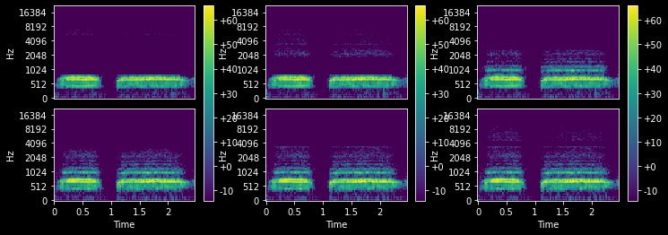
AmplitudeToDBMode (value, names=None, module=None, qualname=None, type=None, start=1)
An enumeration.
AmplitudeToDB (top_db:float|None=None, mode:AmplitudeToDBMode=<AmplitudeToDBMode.Power: 'power'>)
Turn a TensorSpec or TensorMelSpec from the power/amplitude scale to the decibel scale
| Type | Default | Details | |
|---|---|---|---|
| top_db | float | None | None | Minimum negative cut-off in decibels. A reasonable number is 80. |
| mode | AmplitudeToDBMode | AmplitudeToDBMode.Power | Power is elementwise square of magnitude |
This output depends on the maximum value in the input tensor, and so may return different values for an audio clip split into snippets vs. a a full clip. See torchaudio docs for details.
with less_random():
_,axs = plt.subplots(1,2,figsize=(12,4))
adb = AmplitudeToDB(top_db=80)
for i, ax in enumerate(axs):
if i==1:
mel = MelSpectrogram(audio.sr, hop_length=1024, n_fft=1024, n_mels=112)(audio)
adb(mel.unsqueeze(0), split_idx=0).squeeze(0).show(ctx=ax)
else:
mel = MelSpectrogram(audio.sr, hop_length=1024, n_fft=1024, n_mels=112)(audio)
mel.show(ctx=ax)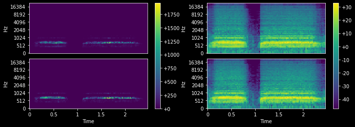
AudioNormalize (mean=None, std=None, n_spec=1, axes=(0, 2, 3))
Normalize/denorm batch of TensorSpec or TensorMelSpec.